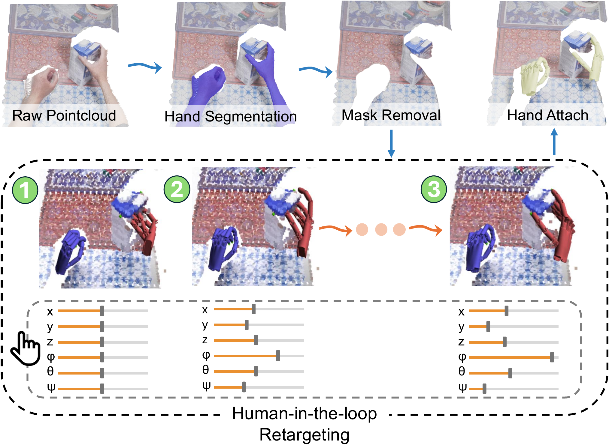
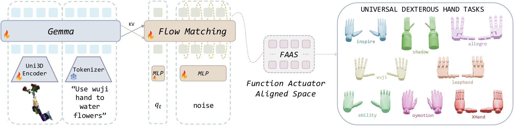
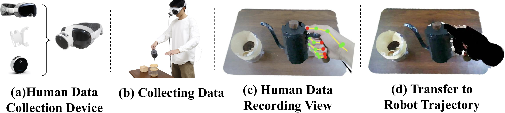

UniDex: A Robot Foundation Suite for Universal Dexterous Hand Control from Egocentric Human Videos


Abstract
Dexterous manipulation remains challenging due to the cost of collecting real-robot teleoperation data, the heterogeneity of hand embodiments, and the high dimensionality of control. We present UniDex, a robot foundation suite that couples a large-scale robot-centric dataset with a unified vision-language-action policy and a practical human-data capture setup for universal dexterous hand control. First, we construct UniDex-Dataset, a robot-centric dataset over 50K trajectories across eight dexterous hands derived from egocentric human videos. To transform human data into robot-executable trajectories, we employ a human-in-the-loop retargeting procedure to align fingertip trajectories while preserving plausible hand-object contacts. Second, we introduce FAAS, a unified action space that maps functionally similar actuators to shared coordinates, enabling cross-hand transfer, and train UniDex-VLA, a 3D VLA policy pretrained on UniDex-Dataset and finetuned with task demonstrations. In addition, we build UniDex-Cap, a portable setup for human-robot data co-training that reduces reliance on costly robot demonstrations.
Overview
UniDex-Dataset
Transform egocentric human videos into robot data with human-in-the-loop retargeting, producing a scalable robot-centric dexterous dataset.
FAAS + UniDex-VLA
Learn a unified dexterous VLA in a shared function-actuator-aligned action space for tool use and robot hand generalization.
Tool-Use Tasks
Evaluate dexterous manipulation on real-world long-horizon tasks including coffee making, sweeping, watering flowers, cutting bags, and using a mouse.
Zero-Shot Cross-Hand Transfer
Transfer policies across dexterous hands with different kinematics and DoFs through FAAS and diverse pretraining.
UniDex-Cap
Capture synchronized human demonstrations with a portable setup and convert them into robot-centric trajectories for co-training.
UniDex-Dataset
UniDex-Dataset focuses on converting large-scale human data into robot data. The key step is human-in-the-loop retargeting: human fingertip trajectories are aligned to robot hands with interactive adjustment so that the resulting robot executions preserve physically plausible contacts. This turns egocentric human manipulation videos into robot-executable dexterous trajectories suitable for large-scale pretraining.
Dataset Video

8 hands, over 50k trajectories, and 9M paired image-pointcloud-action frames.
Human-in-the-Loop Retargeting

Human Data
Robot Data
FAAS + UniDex-VLA
FAAS

FAAS maps actuators with the same functional role to shared coordinates, enabling transfer across dexterous hands with different kinematics and DoFs.
UniDex-VLA

UniDex-VLA is a 3D vision-language-action policy that takes pointcloud observations, language instructions, and proprioception, and predicts dexterous action chunks in FAAS.
Tool-Use Tasks
Generalization
UniDex-Cap
UniDex-Cap is a portable human data capture setup that records synchronized RGB-D streams and hand poses, then converts them into robot-executable trajectories through the same transformation pipeline. It can be used to collect human data for human-robot data co-training.

BibTeX
@inproceedings{zhang2026unidex,
title={UniDex: A Robot Foundation Suite for Universal Dexterous Hand Control from Egocentric Human Videos},
author={Zhang, Gu and Xu, Qicheng and Zhang, Haozhe and Ma, Jianhan and He, Long and Bao, Yiming and Ping, Zeyu and Yuan, Zhecheng and Lu, Chenhao and Yuan, Chengbo and Liang, Tianhai and Tian, Xiaoyu and Shao, Maanping and Zhang, Feihong and Ding, Mingyu and Gao, Yang and Zhao, Hao and Zhao, Hang and Xu, Huazhe},
booktitle={Proceedings of the IEEE/CVF Conference on Computer Vision and Pattern Recognition},
year={2026}
}